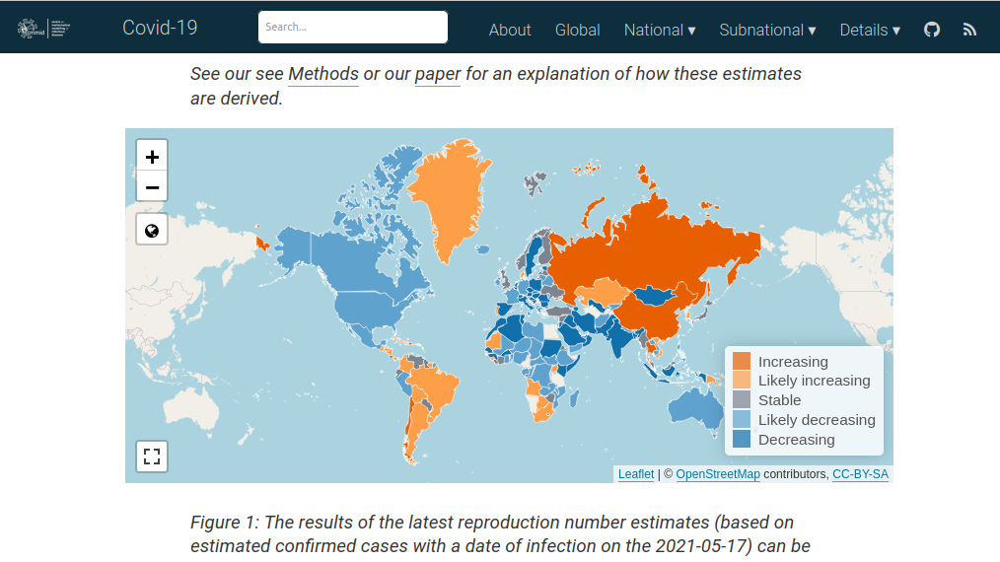
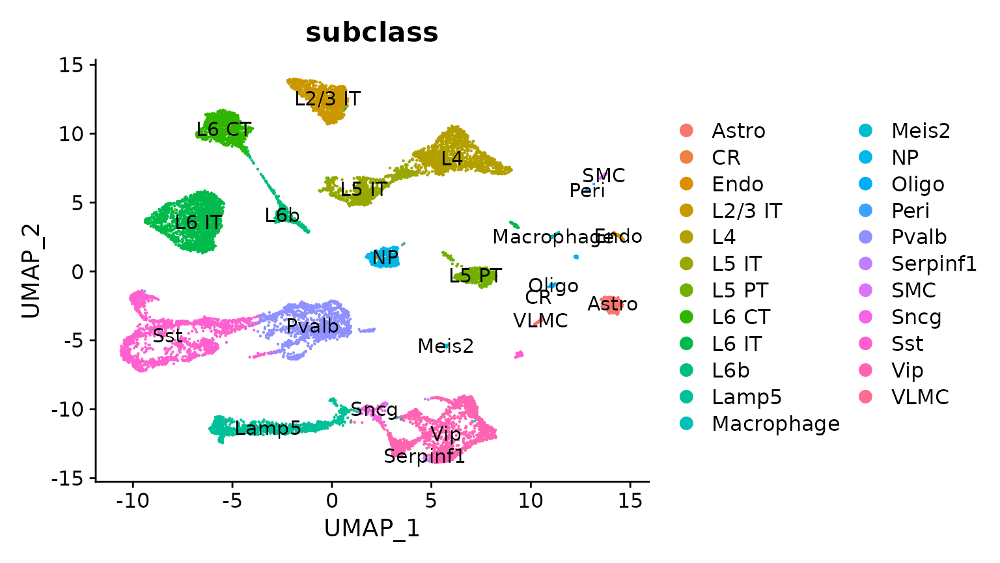
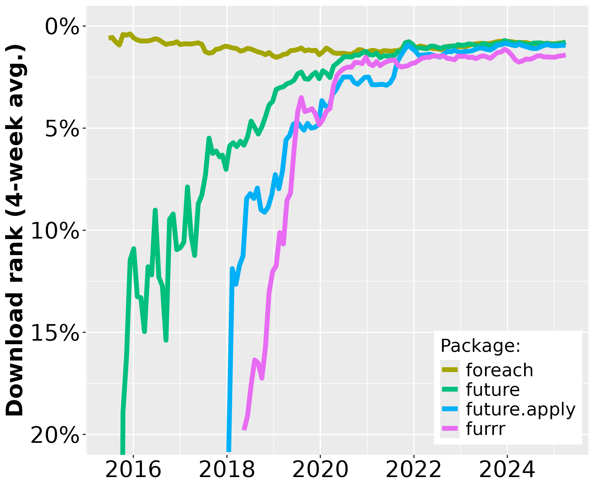
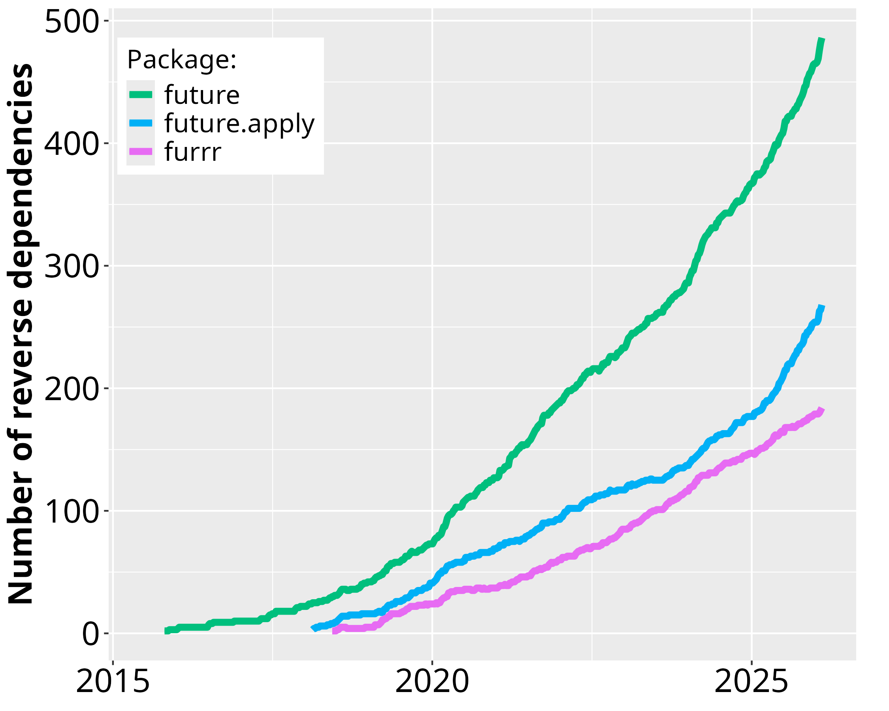
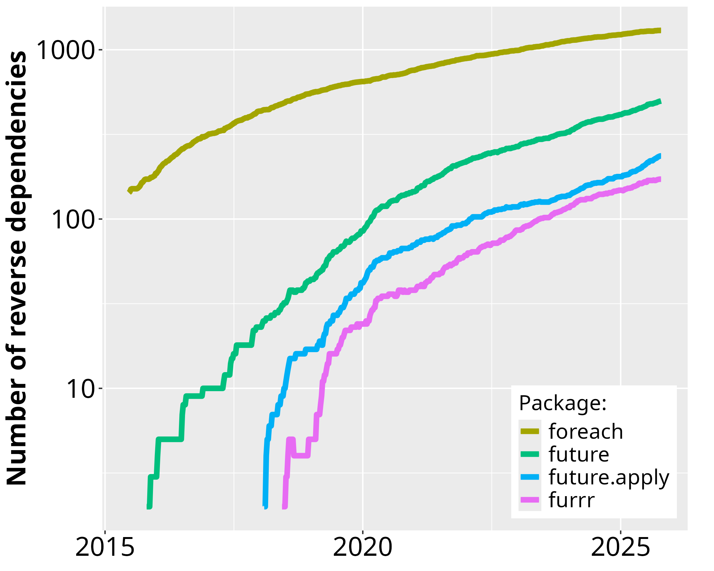

Real-World Use & Statistics
Real-World Use
If we look at our two main R package repositories, CRAN and Bioconductor, we find that the future framework is used by R packages spanning a wide range of areas, e.g. statistics, modeling & prediction, time-series analysis & forecasting, life sciences, drug analysis, clinical trials, disease modeling, cancer research, computational biology, genomics, bioinformatics, biomarker discovery, epidemiology, ecology, economics & finance, spatial, geospatial & satellite analysis, and natural language processing. That is just a sample based on published R packages - we can only guess how futures are used by users at the R prompt, in users’ R scripts, non-published R packages, Shiny applications, and R pipelines running internally in the industry and academia.
There are two major use cases of the future framework: (i) performance improvement through parallelization, and (ii) non-blocking, asynchronous user experience (UX). Below are some prominent examples. More examples can be found on R-university, which lists ~1,400 CRAN packages that need the future package.
EpiNow2: Estimate Real-Time Case Counts and Time-Varying Epidemiological Parameters

EpiNow2 is an R package to estimate real-time case counts and time-varying epidemiological parameters, such as current trends of COVID-19 incidents in different regions around the globe.
EpiNow2 uses futures to speed up processing. The future framework is used to estimate incident rates in different regions concurrently as well as running Markov Chain Monte Carlo (MCMC) in parallel.
Seurat: Large-Scale Single-Cell Genomics

Seurat is an R package designed for QC, analysis, and exploration of single-cell RNA-seq data. Seurat aims to enable users to identify and interpret sources of heterogeneity from single-cell transcriptomic measurements, and to integrate diverse types of single-cell data. Azimuth is a Seurat-based web application, e.g. HuBMAP - NIH Human Biomolecular Atlas Project
Seurat uses futures to speed up processing. The future framework makes it possible to process large data sets and large number of samples in parallel on the local machine, distributed on multiple machines, or via large-scale high-performance compute (HPC) environments. Azimuth uses futures to provide a non-blocking web interface.
Shiny: Scalable, Asynchronous UX

Shiny is an R package that makes it easy to build interactive web applications and dashboards directly from R. Shiny apps can run locally, be embedded in an R Markdown document, and be hosted on a webpage - all with a few clicks or commands. The combination of being simple and powerful has made Shiny the most popular solution for web applications in the R community. See the Shiny Gallery for real-world examples, e.g. the Genome Browser by the International Cancer Genome Consortium (ICGC) team.
Shiny uses the future framework to provide a non-blocking user interface and to scale up computationally heavy requests. It combines future with promises to turn a blocking, synchronous web interface into a non-blocking, asynchronous, responsive user experience.
Mlr3: Next-Generation Machine Learning

The mlr3 ecosystem provides efficient, object-oriented building blocks for machine learning (ML) for tasks, learners, resamplings, and measures. It supports large-scale, out-of-memory data processing.
mlr3 uses futures to speed up processing. The future framework is used in different ML steps, e.g. resampling of learners can be performed much faster when run in parallel. The framework makes sure proper parallel random-number generation (RNG) is used and guarantees reproducible results.
Targets: Pipeline Toolkit for Reproducible Computation at Scale

The targets package, and its predecessor drake, is a general-purpose computational engine for statistics and data science that brings together function-oriented programming in R with make-like declarative workflows. It has native support for parallel and distributed computing while preserving reproducibility.
Both targets and drake identify targets in the declared dependency graph that can be resolved concurrently, which then can be processed in parallel on the local computer or distributed in the cloud via the future framework.
CRAN Statistics
Since the first CRAN release of future in June 2015, its uptake among end-users and package developers have grown steadily. During October 2025, future was among the top-0.7% most downloaded package on CRAN (Figure 1) and there are 500 packages on CRAN and Bioconductor that directly depend on it (Figure 2). For map-reduce parallelization packages future.apply (top-0.8% most downloaded) and and furrr (top 1.4%), the corresponding number of packages are 240 and 170, respectively. If we consider recursive dependencies too, that is, packages that use the future package either directly or indirectly via another package, then 85% of all ~23,000 CRAN packages may rely on the future framework for their processing.

Figure 1: The download percentile ranks for future, future.apply, furrr, and foreach averaged every four weeks. future is among the top-0.7% most downloaded packages on CRAN. The data are based on the Posit CRAN mirror logs. There are approximately 200 million package downloads per month from the Posit CRAN mirror alone. Since none of the other CRAN mirrors provide statistics, it is impossible to know the total amount of package installations.
As a reference1, the popular foreach, released in 2009, was among the top-0.8% most downloaded packages during the same period and it has 1,300 reverse package dependencies on CRAN. The number of users that download future has grown rapidly whereas the the same number has slowly decreased for the foreach package (Figure 1). Similarly, the number of reverse package dependencies on future appear to grow faster than for foreach (Figure 2).


Figure 2: Number of CRAN2 packages over time that depend on future, future.apply, furrr, and foreach since the first release of future in June 2015. Left: The package counts on the linear scale without foreach. Right: The same data on the logarithmic scale to fit also foreach.
Footnotes
Importantly, the comparison toward foreach is only done as a reference for the current demand for parallelization frameworks in R and to show the rapid uptake of the future framework since its release. It is not a competition because foreach can per design be used in companion with the future framework via doFuture. The choice between foreach with doFuture, future.apply, and furrr is a matter of preference of coding style - they all rely on futures for parallelization.↩︎
Because historical data for reverse dependencies on Bioconductor are hard to track down, Bioconductor packages are not included in these graphs.↩︎